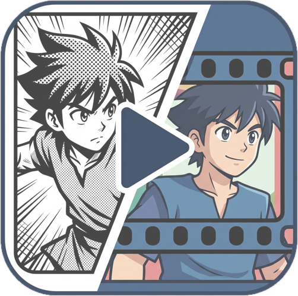
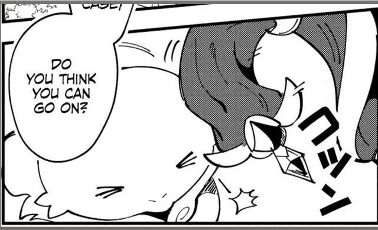

Manga2AnimateAn Agentic Framework for Faithful Manga Animation with Script and Storyboard Planning
1National Yang Ming Chiao Tung University*Equal contribution
Adapting existing manga into coherent animation that stays faithful to the source is a valuable yet challenging task. Existing methods either access the manga mainly through text, losing its characters and art style, or feed manga pages directly into video generation models, which misinterpret the manga's structure and produce incorrect storylines. In this paper, we propose Manga2Animate, a multi-agent framework that grounds every stage of generation in the source manga. We decompose the task into two intermediate representations, an animation script and a visual storyboard. Each representation is produced by a creator agent and reviewed against the source panels by a paired reviewer agent. We tailor representation-specific selection and dual-level feedback to progressively refine both before synthesizing the final animation. Extensive experiments and a user study demonstrate that Manga2Animate produces animations more faithful to the source manga and more consistent across shots than state-of-the-art approaches.
Following real animation production, Manga2Animate first writes an animation script, then draws a visual storyboard, and only then generates the video. Each step is made by a creator agent and checked against the source manga panels by a reviewer agent. The walkthrough below uses the real intermediate outputs of one case; pick a stage to jump to it.
A candidate script can describe one panel precisely and misread the next. This example shows how the Script Reviewer judges one clip across three candidates and assembles the best script from the winning parts.

Manga panel 6Extreme close-up shot. The creature's face occupies the lower left side of the screen, facing slightly screen right with its eyes tightly shut. On the right side of the screen, the elf's head leans into the frame, her face very close to the creature, looking down at it with a soft expression. The top crystal portion of her wooden staff is visible resting near her shoulder on the right edge. Dialogue(the elf): 'Do you think you can go on?'
WrongExtreme close-up shot. On the left side of the screen, the creature's face is visible in partial profile, facing left with tightly squeezed shut eyes. On the right side, the ornate head of the elf's staff (featuring a dark crescent shape and a diamond-shaped crystal) gently bonks the top of the creature's head from above. Dialogue(the elf): 'Do you think you can go on?'
Correct!A composite shot split horizontally. In the upper half, the elf is positioned on the right, kneeling and gently petting the top of the creature's head with her right hand while smiling. The creature is on the left, looking flustered with its mouth open. In the lower half, an extreme close-up shows the creature's face on the left with closed eyes, positioned next to the pointed base of the elf's staff on the right. Dialogue(the creature): 'I'm not ash able as... back when I wash young...' Dialogue(the elf): 'IN THAT CASE, DO YOU THINK YOU CAN GO ON?'
WrongAll script-based baselines receive the same refined script as Manga2Animate, so differences come from how each method turns it into video.
37 participants saw eight storyboard cases and eight video cases next to the input manga, with method names hidden and order randomized, and picked the best result for each criterion.
Video metrics on the evaluation set (higher is better). The full model is the last row of each table; red marks the best value and an underline the second best.
@misc{manga2animate2026,
title={{Manga2Animate}: An Agentic Framework for Faithful Manga Animation with Script and Storyboard Planning},
author={Sheng-Wei Zhang and Hsi-An Chen and Yan-Ting Liou and Chih-Hsuan Chen and Shih-Chen Tseng and Yu-Lun Liu},
year={2026}
}